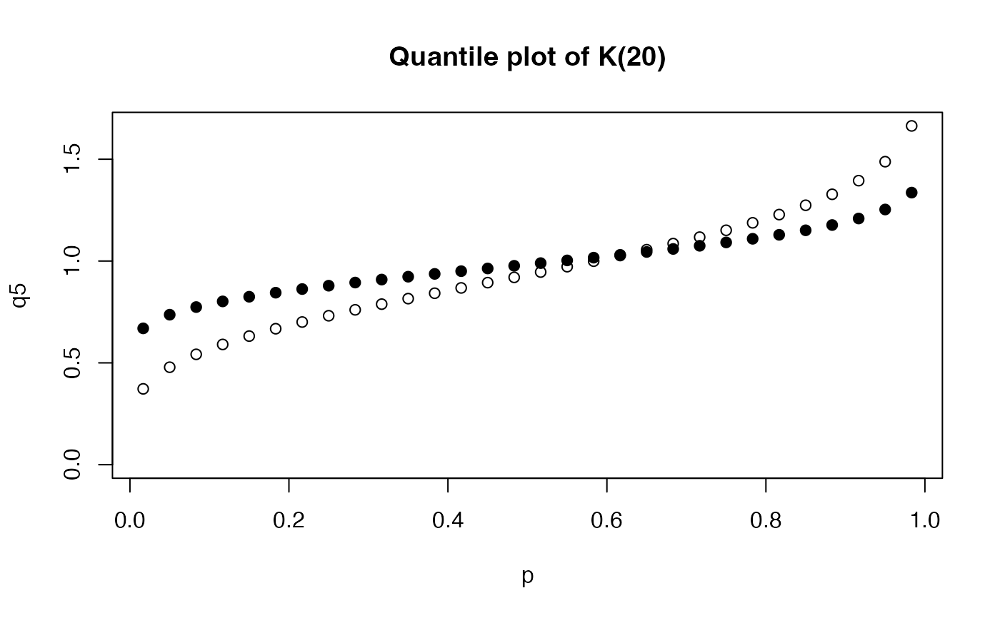
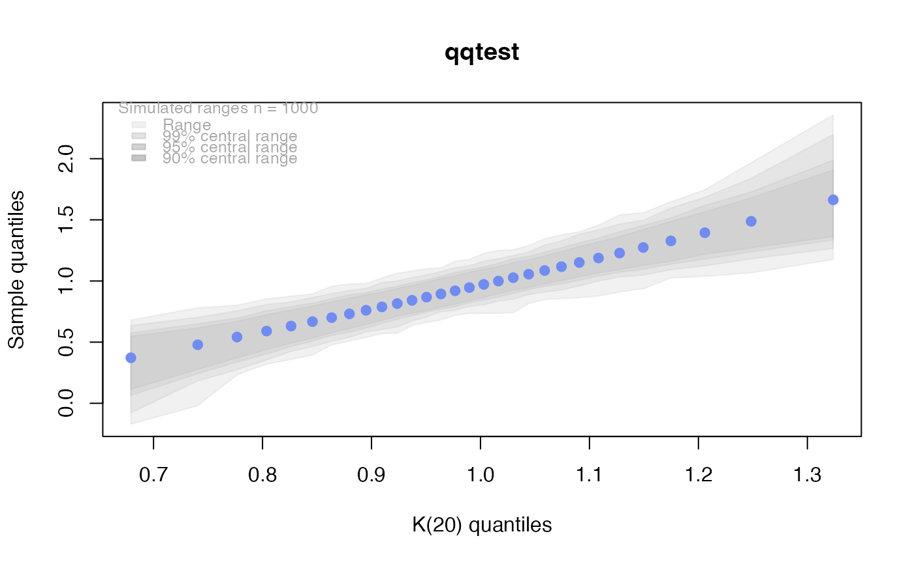
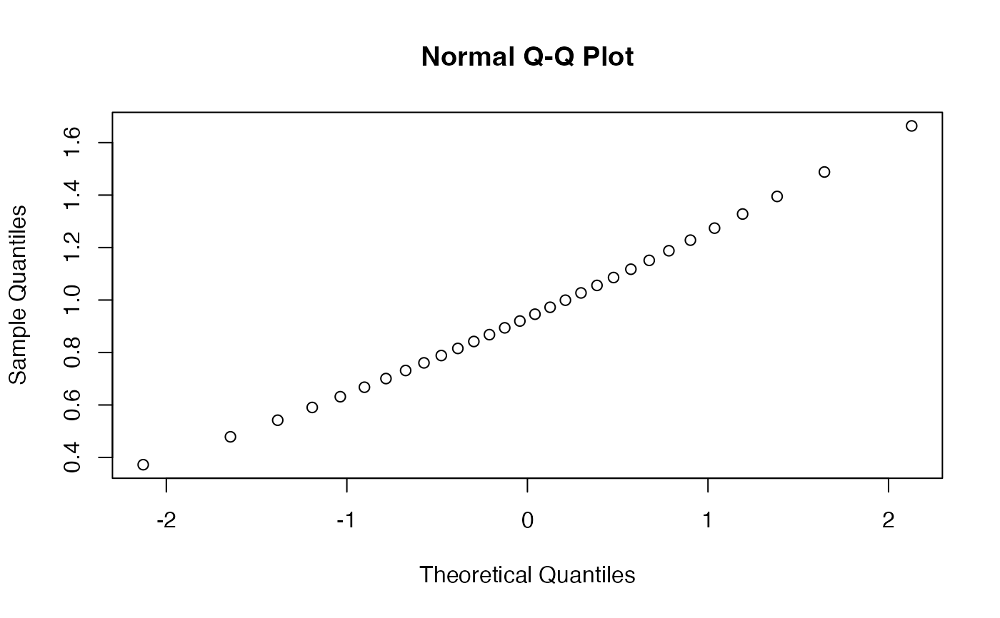
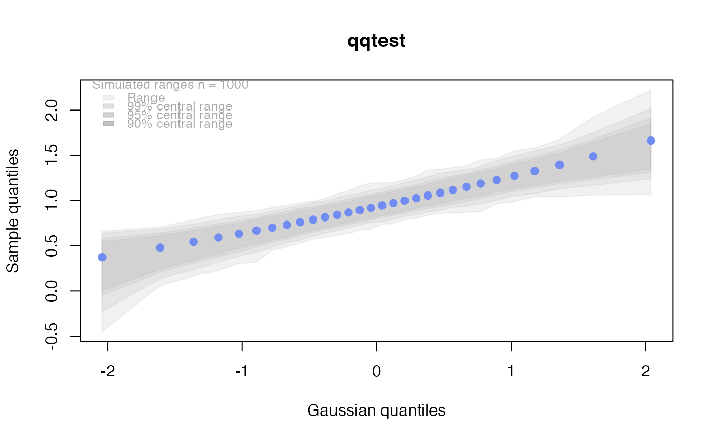
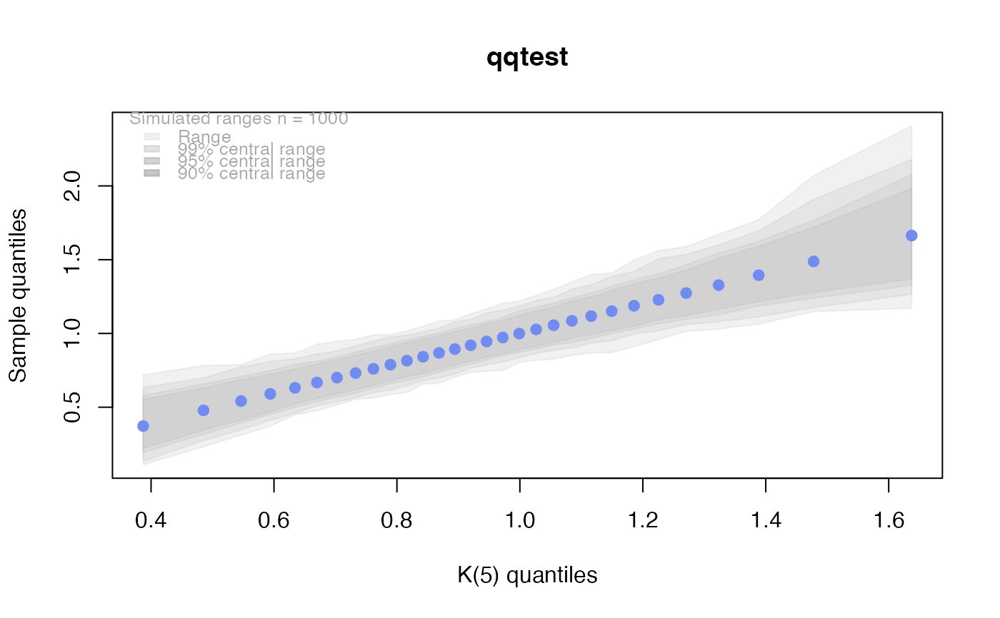
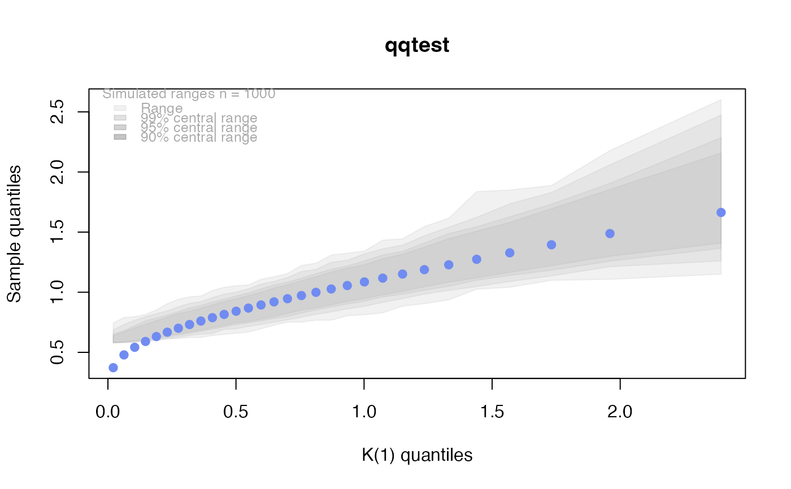

Quantile function for the K distribution on df degrees of freedom having non-centrality parameter ncp.
A K distribution is the square root of a chi-square divided by its degrees of freedom. That is, if x is chi-squared on m degrees of freedom, then y = sqrt(x/m) is K on m degrees of freedom. Under standard normal theory, K is the distribution of the pivotal quantity s/sigma where s is the sample standard deviation and sigma is the standard deviation parameter of the normal density. K is the natural distribution for tests and confidence intervals about sigma. K densities are more nearly symmetric than are chi-squared and concentrate near 1. As the degrees of freedom increase, they become more symmetric, more concentrated, and more nearly normally distributed.
Arguments
- p
A vector of probabilities at which to calculate the quantiles.
- df
Degrees of freedom (non-negative, but can be non-integer).
- ncp
Non-centrality parameter (non-negative).
- upper.tail
logical; if
TRUE, instead of returning F(x) (the default), the upper tail probabilities 1-F(x) = Pr(X>x) are returned.- log.p
logical; if
TRUE, probabilities are given as log(p).
Value
qkay returns the quantiles at probabilities p for a K on df degrees of freedom and non-centrality parameter ncp.
Invalid arguments will result in return value NaN, with a warning.
The length of the result is the maximum of the lengths of the numerical arguments.
The numerical arguments are recycled to the length of the result. Only the first elements of the logical arguments are used.
Note
All calls depend on analogous calls to chi-squared functions. See qchisq for details on non-centrality parameter calculations.
Examples
p <- ppoints(30)
# Get the quantiles for these points
q5 <- qkay(p, 5)
plot(p, q5, main="Quantile plot of K(20)", ylim=c(0,max(q5)))
# Add quantiles from another K
points(p, qkay(p, 20), pch=19)

#
# Do these EXACT quantiles from a K(5) look like they might
# have been generated from K(20)?
qqtest(q5, dist="kay",df=20)

# How about compared to normal?
qqnorm(q5)

qqtest(q5)

# for this many degrees of freedom it looks a lot like
# a gaussian (normal) distribution
# And should look really good compared to the true distribution
qqtest(q5, dist="kay", df=5)

#
#
# But not so much like it came from a K on 1 degree of freedom
qqtest(q5, dist="kay",df=1)

#
# See the vignette for more on the "K-distribution"
#